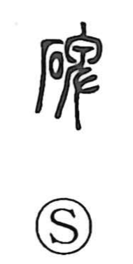

碑

Kun: ishibumi | On: hi
stone monument ・ stele ・ tombstone
Explanation
碑 is a phono-semantic character: 石 signals “stone,” while 卑 serves as the phonetic, indicating the on-yomi hi. The Shuowen already defines it as an upright, standing stone. In ancient funerary practice, such a stone was set up with a small round hole near the top; a rope was threaded through this opening to lower the coffin into the grave. Over time, these stones bore the deceased’s name and record of life, giving rise to the epitaph (hibun), and their inscriptions (himei) became invaluable biographical sources. Many venerable examples survive today in the Xi’an Stele Forest, which preserves a great number of these stone monuments.